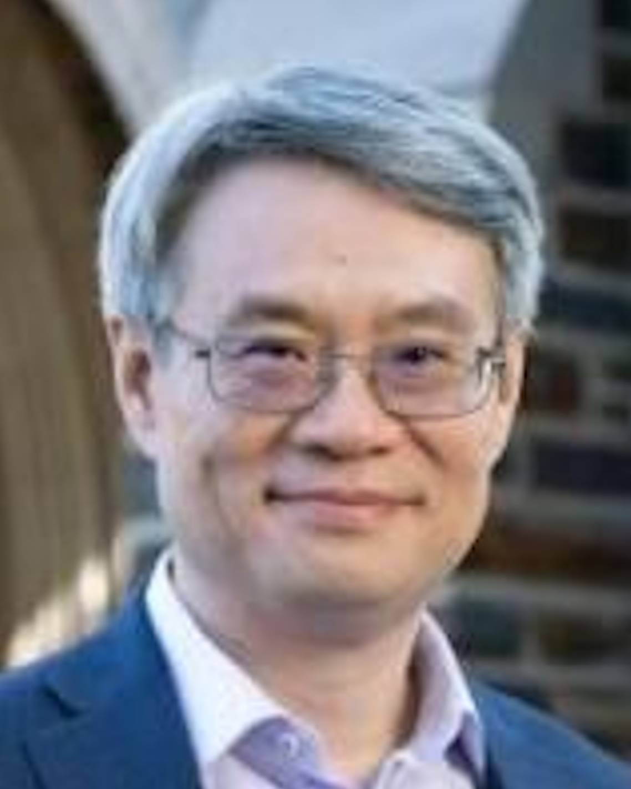
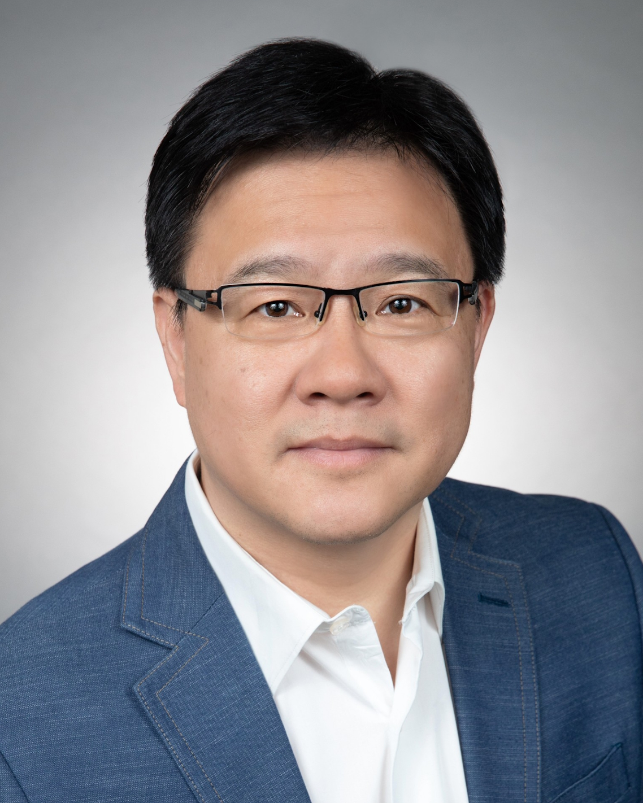
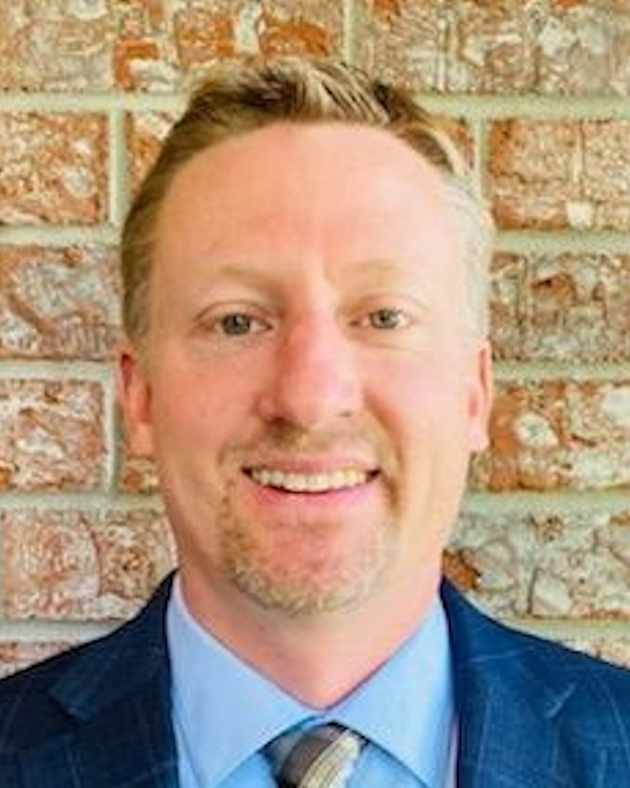
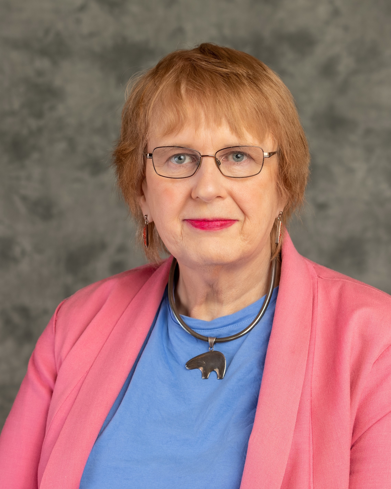
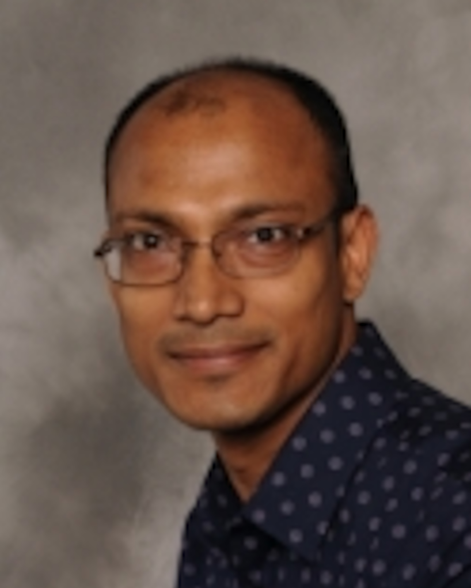

Keynote 1: Rethinking Computer Architecture Design in the Era of Large Language Models
Chair: Himanshu Thapliyal

Yiran Chen,
Duke University
Abstract: The rapid advancement of large language models (LLMs) has revolutionized various fields, from natural language processing to artificial intelligence-driven applications. However, the unprecedented scale and complexity of these models demand a fundamental reexamination of traditional computer architecture design. In this keynote, we will explore the impact of LLMs on hardware and software architectures, addressing the unique challenges and opportunities they present. We will delve into innovative approaches to memory management, parallel processing, and energy efficiency tailored to the needs of LLMs. By integrating insights from cutting-edge research and industry practices, this keynote aims to chart a path forward for creating optimized, scalable, and sustainable computing systems capable of harnessing the full potential of large language models.
Bio:As a leader in AI computing, Yiran Chen is the John Cocke Distinguished Professor of Electrical and Computer Engineering at Duke University. He serves as the principal investigator and director of the NSF AI Institute for Edge Computing – Athena, the NSF Industry-University Cooperative Research Center for Alternative Sustainable and Intelligent Computing (ASIC), and the co-director of the Duke Center for Computational Evolutionary Intelligence (DCEI). Dr. Chen is the author of over 600 publications and holds 96 US patents. His contributions have been recognized with numerous awards and honors, including the IEEE Circuits and Systems Society's Charles A. Desoer Technical Achievement Award and the IEEE Computer Society's Edward J. McCluskey Technical Achievement Award. He is a Fellow of the AAAS, ACM, IEEE, and NAI, and currently serves as the chair of ACM SIGDA and the inaugural Editor-in-Chief of IEEE Transactions on Circuits and Systems for Artificial Intelligence (TCASAI). He is also a founding member of the Academic Alliance on AI Policy (AAAIP).
|
Keynote 2: Emerging Technologies for the Era of Pervasive Intelligence
Chair: Garrett Rose

Brandon Wang,
VP at Synopsys Inc
Abstract: The talk will address the new era of pervasive intelligence, driven by ubiquitous AI, silicon proliferation, and software driven systems. It then covers the key emerging technologies such as AI-driven design automation, heterogeneous systems, digital twining, next generation of computing architectures, etc that fuel the massive digital transformation towards the pervasive intelligence. The speaker will also share what we can do to stay at the forefront of these innovation.
Bio: Brandon Wang is a Vice President, VP of Technology Strategy at Office of the CEO at Synopsys. Brandon oversees corporate level technology roadmaps and strategies for growth, including global strategic and ecosystem partnerships, and M&A/investments for new horizons. He also heads the Chief Innovation Office, championing organic innovations and worldwide academic and research partnerships. Prior to joining Synopsys in 2018, Brandon served executive and senior roles at Cadence, ARM, Qualcomm, and Lattice in chief strategy office, product marketing, and R&D organizations for over two decades. Brandon is currently serving at the board of Efabless corporation, and as a limited partner/Investment Council member to Imec.Xpand, an affiliated VC to Imec. He is also a Limited Partner to AIX, a leading venture capital firm focusing on AI investment. An Electrical and Computer Engineer by training, Brandon holds 10 patents, and has published at 20+ IEEE conferences, in journal papers and invited talks in the areas of 3D-IC, Machine Learning, HW security, High-speed Interfaces, Low Power CPU, FPGA and Memory Designs. He also has an MBA degree from the Wharton School at the University of Pennsylvania.
|
Keynote 3: Pushing Quantum Computers Beyond Classical Simulation
Chair: Himanshu Thapliyal

Russell Stutz,
Director at Quantinuum
Abstract: Trapped ion quantum computers have many excellent properties for enabling both fault-tolerant quantum computation and algorithms run directly on the physical qubit layer. Demonstrating quantum circuits that are difficult to classically solve is a necessary condition for providing computational value with quantum computers, and in this talk we will discuss how the classical simulation complexity of quantum circuits scales under various assumptions. Pushing beyond minimum demonstrations on the physical layer, large scale applications require fault-tolerance and the demonstration of quantum error correcting codes. I will end with a discussion about how quantum computers are now at the point of moving long theorized error correction protocols into experimental realization.
Bio: Dr. Russell Stutz is currently leading the Commercial Hardware group of Quantinuum, where he is responsible for the design and build of commercial quantum computers. He received his Bachelor of Science in Physics from the University of Kansas performing research in experimental particle physics. Upon graduation he received a commission in the US Air Force. As an Air Force officer, he worked on laser research at the Air Force Research Lab, Directed Energy Directorate at Kirtland AFB, NM. Dr. Stutz received his PhD from the University of Colorado-Boulder in atomic, molecular, and optical physics in 2010 studying the electron electric dipole moment in trapped molecular ions. After receiving his PhD, Dr. Stutz worked industrial research and development at AOSense developing quantum sensors, as well as Lockheed Martin. He started at Honeywell Quantum Solutions, a precursor of Quantinuum, in 2016.
|
Keynote 4: Precision Agriculture and VLSI
Chair: Juergen Becker

Marilyn Wolf,
University of Nebraska-Lincoln
Abstract: Precision agriculture and environmental monitoring present important use cases for semiconductors. However, meeting the unique challenges of these applications will require innovations in packaging and system architecture. This talk will discuss the requirements of precision agriculture and environmental marketing, some of the technological challenges that must be addressed, and possible approaches.
Bio: Marilyn Wolf is Elmer E. Koch Professor of Engineering and Director of ORED Engineering and Technology Initiatives at the University of Nebraska Lincoln. She received her BS, MS, and PhD in electrical engineering from Stanford University in 1980, 1981, and 1984, respectively. She was with AT&T Bell Laboratories from 1984 to 1989. She was on the faculty of Princeton University from 1989 to 2007 and was Farmer Distinguished Chair at Georgia Tech from 2007 to 2019. Her research interests included embedded computing, embedded video and computer vision, and VLSI systems. She has received the IEEE Kirchmayer Graduate Teaching Award, the IEEE Computer Society Goode Memorial Award, the ASEE Terman Award, IEEE Circuits and Systems Society Education Award, and the ACM SIGDA Distinguished Service Award. She is a Fellow of the IEEE and ACM and an IEEE Computer Society Golden Core member.
|
Keynote 5: Hardware Security 2.0 (and the Unmistakable Role of Generative AI)
Chair: Himanshu Thapliyal

Swarup Bhunia,
University of Florida
Abstract: With the emergence of the Internet of Things (IoT) regime that promises exciting new applications from smart cities to connected autonomous vehicles, security of edge devices has come to the forefront of the system design process. Recent discoveries and reports on numerous security attacks on microchips and circuits violate the well-regarded concept of hardware trust anchors. Current business model and the supply chain eco-system for microelectronics give rise to unprecedented security issues and accentuate the need for secure, trustworthy hardware. It has prompted system designers to develop novel security primitives, design-for-security, and test/validation solutions to achieve secure hardware for diverse IoT applications. Emerging security issues and countermeasures have also led to interesting interplay between security and verification. Verification of hardware for security and trust has become an integral part of the system design flow. The talk will cover spectrum of challenges associated with hardware security and describe emerging solutions in creating secure trustworthy hardware that can enable IoT security for the mass. It will outline the need and challenges for verification of an electronic design’s security properties and the motivation for learning-guided security design and verification. Finally, it will outline how AI-driven assurance of hardware, specifically the usage of generative AI, is creating a promising new paradigm of hardware-centric IoT security.
Bio: Dr. Swarup Bhunia is currently a preeminence professor of cybersecurity and Semmoto Endowed Professor of Internet of Things (IoT) at University of Florida. He serves as the Director of the Warren B. Nelms Institute for the Connected World. Earlier, he was appointed as the T. and A. Schroeder associate professor of Electrical Engineering and Computer Science at Case Western Reserve University. He has over twenty years of research and development experience with 10 authored/edited books and over 300 publications in peer-reviewed journals and premier conferences and ten authored/edited books. His research interests include hardware security and trust, adaptive nanocomputing and novel test methodologies. Dr. Bhunia received IBM Faculty Award, National Science Foundation career development award, Semiconductor Research Corporation Inventor Recognition Award, IEEE HOST Hall of Fame award, University of Florida Research Foundation Professorship Award, SRC technical excellence award as a team member, and several best paper awards/nominations. He is co-founding editor-in-chief of a Springer journal on hardware and systems security. Dr. Bhunia received his PhD from Purdue University on energy-efficient and robust electronics. He is a Fellow of the IEEE.
|
Keynote 6: Some Trends in SoC Power Optimization
Chair: Juergen Becker
Ricardo Reis,
UFRGS, Brazil
Abstract: The always increasing transistor count in modern systems on chip, as well the exploding number of devices connected to the internet of things, is demanding new design approaches. One fundamental issue and challenge is the design optimization, mainly power optimization. In some applications, as implantable devices, reliability and power optimization is fundamental. It will be done a short overview of some techniques for power optimization at different levels of abstraction. But a focus will be related to the physical design optimization, as it is becoming a more and more important issue, not only for power optimization, but also for connections and vias optimization, increasing routability as well reliability. It will be shown some techniques and examples of optimization at architectural and physical design level.
Bio: Ricardo Reis received a Bachelor degree in Electrical Engineering from Federal University of Rio Grande do Sul (UFRGS), Porto Alegre, Brazil, in 1978, and a Ph.D. degree in Microelectronics from the National Polytechnic Institute of Grenoble (INPG), France, in 1983. Doctor Honoris Causa by the University of Montpellier in 2016. He is a full professor at the Informatics Institute of Federal University of Rio Grande do Sul. His main research includes physical design automation, design methodologies, fault tolerant systems and microelectronics education. He has more than 700 publications including books, journals and conference proceedings. He was vice-president of IFIP (International Federation for Information Processing) and he was also president of the Brazilian Computer Society (two terms) and vice-president of the Brazilian Microelectronics Society. He is an active member of CASS and he received the 2015 IEEE CASS Meritorious Service Award. He was vice-president of CASS for two terms (2008/2011), as well CASS BoG member for two terms. He is the founder of the Rio Grande do Sul CASS Chapter, which got the World CASS Chapter of The Year Award 2011, 2012, 2018 and 2022, and R9 Chapter of The Year 2013, 2014, 2016, 2017 and 2020. He is a founder of several conferences like SBCCI and LASCAS, the CASS Flagship Conference in Region 9. He was the General or Program Chair of several conferences like IEEE ISVLSI, SBCCI, IFIP VLSI-SoC, ICECS, PATMOS. Ricardo was the Chair of the IFIP/IEEE VLSI-SoC Steering Committee, vice-chair of the IFIP WG10.5 and he is Chair of IFIP TC10. he received the Researcher of the Year Award in the state of Rio Grande do Sul. He is a founding member of the SBC (Brazilian Computer Society) and also founding member of SBMicro (Brazilian Microelectronics Society). He was member of CASS DLP Program (2014/2015), and he has done more than 70 invited talks in conferences. He is the CASS representative at the IEEE IoT Technical Committee. Ricardo received the IFIP Fellow Award in 2021 and the ACM/ISPD Lifetime Achievement Award in 2022. He received the 2023 IEEE CASS John Choma Educational Award and the 2024 Best Associate Editor of IEEE CASS Magazine.
|
Technical Session 1A
Monday
July 1
10:00 - 11:20
|
Technical Session 1A: Circuits, Reliability, and Fault-Tolerance
Chair: Jie Gu
An 8-bit 1 MS/s Low-Power SAR ADC with an Enhanced EPC for Implantable Medical Devices
Deepika Kumaradasan, Sougata Kumar Kar, and Santanu Sarkar
(Best Paper Candidate)
Generating Storage-Aware Test Sets Targeting Several Fault Models
Hari Addepalli, Irith Pomeranz, Enamul Amyeen, Suriyaprakash Natarajan, Arani Sinha, and Srikanth Venkataraman
Sub-Micron Binary HyperPixel Sensor Circuit: In-Pixel Binarization with Variable Thresholding
Md Rahatul Islam Udoy, Md Mazharul Islam, Akhilesh Jaiswal, and Ahmedullah Aziz
Ultra-Small Area, Highly Linear, Modified All Mosfet Digital-To-Analog Converters with Novel Real time Digital Calibration Algorithm
Ekaniyere Oko-Odion, Isaac Bruce, Emmanuel Nti Darko, Michael Sekyere, Kushagra Bhatheja, and Degang Chen
|
|
Technical Session 1B
Monday
July 1
10:00 - 11:20
|
Technical Session 1B: Computer-Aided Design and Verification
Chair: Ujjwal Guin
Thermal Analysis of 3D Stacking and BEOL Technologies with Functional Partitioning of Many-Core RISC-V SoC
Mohamed Naeim, Sudipta Das, Herman Oprins, Geert Van der Plas, Yun Dai, Pinhong Chen, Ct Kao, Dwaipayan Biswas, and Dragomir Milojevic
Automated Deep Neural Network Inference Partitioning for Distributed Embedded Systems
Fabian Kreß, El Mahdi El Annabi, Tim Hotfilter, Julian Höfer, Tanja Harbaum, and Juergen Becker
Thermal Implications in Scaling High-Performance Server 3D Chiplet-based 2.5D SoC from FinFET to Nanosheet
Yukai Chen, Venkateswarlu Sankatali, Subrat Mishra, Julien Ryckaert, James Myers, and Dwaipayan Biswas
Energy-Aware Incremental OTA Update for Flash-based Batteryless IoT Devices
Wei Wei, Jishnu Banerjee, Sahidul Islam, Chen Pan, and Mimi Xie
|
|
Technical Session 2A
Monday
July 1
11:30 - 12:50
|
Technical Session 2A: Digital Circuits and FPGA-based Designs I
Chair: Ahmed Aziz
Design of Multiplier Circuit Based on Signed-Digit Hybrid Stochastic Computing
Yinjie Song, Hongge Li, Xinyu Zhu, and Yuhao Chen
(Best Paper Candidate)
Energy-Efficient Design of Approximate VVC Interpolation Filters Units
Rafael da Silva, Mateus Grellert, and Ricardo Reis
(Best Paper Candidate)
Adaptive and Offloaded CNNs for IoT-Edge FPGAs
Guilherme Korol and Antonio Carlos Schneider Beck Filho
(Best Paper Candidate)
HIERA: High-Quality and High-Throughput Dehazing Hardware Accelerator with Reconfigurable Computing Unit
Junhao Zhang, Dongqi Fan, and Liang Chang
|
|
Technical Session 2B
Monday
July 1
11:30 - 12:50
|
Technical Session 2B: Emerging and Post-CMOS Technologies I
Chair: Ramtin Zand
Area-efficient Digital Design using RRAM-CMOS Standardcells
Markus Fritscher, Max Uhlmann, Philip Ostrovskyy, Daniel Reiser, Junchao Chen, Schubert Andreas, Carsten Schulze, Gerhard Kahmen, Dietmar Fey, Marc Reichenbach, Milos Krstic, and Christian Wenger
(Best Paper Candidate)
DeepApprox: Rapid Deep Learning based Design Space Exploration of Approximate Circuits via Check-pointing
Muhammad Awais, Hassan Ghasemzadeh Mohammadi, and Marco Platzner
(Best Paper Candidate)
A High-accuracy Time-efficient Error Metric Model for Approximate Computing Circuits
Shouji Chen, Ke Chen, Ziying Cui, and Weiqiang Liu
Random Microfluidic Chip Design with Diagonal Channels Using K-Means Clustering for Fluid Dilutions
Ankita Agrawal and Sudip Roy
|
|
Technical Session 3A
Tuesday
July 2
10:00 - 11:40
|
Technical Session 3A: VLSI for Applied and Future Computing I
Chair: Ramtin Zand
Most Significant Digit First Multiply-and-Accumulate Unit for Neural Networks
Sahar Moradi Cherati, Mohsen Barzegar, and Leonel Sousa
(Best Paper Candidate)
Exploring a Hybrid SRAM-RRAM Computing-In-Memory Architecture for DNNs Model Inference
Yu-Guang Chen, Zhi-Wei Liu, and Ying-Jing Tsai
(Best Paper Candidate)
Accelerating Large Language Model Training with In-Package Optical Links for Scale-Out Systems
Aakash Patel, Dwaipayan Biswas, Joyjit Kundu, Yoojin Ban, Nicolas Pantano, Arindam Mallik, Julien Ryckaert, and James Myers
BafSP: Co-Design of Compute SRAM and Bit-Aware Data Flip Mitigation with In-Memory Sparsity Detection for SpMM
Xiaojie Li, Mingyu Wang, Yangzhan Mai, Yicong Zhang, Baiqing Zhong, and Zhiyi Yu
SHIFFT: A Scalable Hybrid In-Memory Computing FFT Accelerator
Pragnya Sudershan Nalla, Zhenyu Wang, Sapan Agarwal, T. Patrick Xiao, Christopher H. Bennett, Matthew J. Marinella, Jae-sun Seo, and Yu Cao
|
|
Technical Session 4A
Tuesday
July 2
1:25 - 2:45
|
Technical Session 4A: System Design and Security I
Chair: Amit Degada
RFET-based Dynamic Differential Logic Cells Against Power Side-Channel Attacks
Nima Kavand, Armin Darjani, Garvit Chhabra, and Akash Kumar
Enhancing Graph Execution for Performance and Energy Efficiency on NUMA Machines
Hiago Mayk Gomes de Araújo Rocha, Marcelo Koji Moori, Arthur Francisco Lorenzon, and Antonio Carlos Schneider Beck
Towards Quantum-Resistant Security: Pre-Silicon Power Side-Channel Leakage Analysis of CRYSTALS-Kyber
Nashmin Alam, Tao Zhang, and Farimah Farahmandi
Efficient Federated Learning through Distributed Model Pruning
Mohammed Alawad
|
|
Technical Session 5A
Tuesday
July 2
2:55 - 4:15
|
Technical Session 5A: System Design and Security II
Chair: Tauhidur Rahman
DAW-DMR: Divergence-Aware Warped DMR with Full Error Detection for GPGPUs
Yukun Wei, Mingyu Wang, Haiqiu Huang, Wangguang Wang, and Zhiyi Yu
Embedding Power Signature Generation into Low Dropout Voltage Regulators for Enhancing IoT Security
Ashish Mahanta and Haibo Wang
A Fine-Grained Dynamic Partitioning Against Cache-Based Timing Attacks via Cache Locking
Nicolas Gaudin, Pascal Cotret, Guy Gogniat, and Vianney Lapotre
Defending the Citadel: Fault Injection Attacks against Dynamic Information Flow Tracking and Related Countermeasures
William Pensec, Francesco Regazzoni, Vianney Lapotre, and Guy Gogniat
|
|
Technical Session 5B
Tuesday
July 2
2:55 - 4:15
|
Technical Session 5B: VLSI for Applied and Future Computing II
Chair: Mohammed Alawad
Energy-Efficient and Low-Latency Computation of Transcendental Functions in a Precision-Tunable PIM Architecture
Gian Singh, Ayushi Dube, and Sarma Vrudhula
In-Sensor Motion Recognition with Memristive System and Light Sensing Surfaces
Hritom Das, Imran Fahad, Snb Tushar, Sk Hasibul Alam, Graham Buchanan, Dan Scott, Garrett S. Rose, and Sai Swaminathan
SNN-ANN Hybrid Networks for Embedded Multimodal Monocular Depth Estimation
Sadia Anjum Tumpa, Anusha Devulapally, Matthew Brehove, Espoir Kyubwa, and Vijaykrishnan Narayanan
DBFS: Dynamic Bitwidth-Frequency Scaling for Efficient Software-Defined SIMD
Pengbo Yu, Flavio Ponzina, Alexandre Levisse, Dwaipayan Biswas, Giovanni Ansaloni, David Atienza, and Francky Catthoor
|
|
Technical Session 6A
Wednesday
July 3
12:45 - 2:05
|
Technical Session 6A: Digital Circuits and FPGA-based Designs II
Chair: Peipei Zhou
Optimizing LU Decomposition with RISC-V Based Hardware Acceleration
Bindu Bhargavi Mekala, Sai Sri Harshith Grandhala, Sri Parameswaran, and Soumya J.
Unfolded SiBM BCH Decoders for High-Throughput Low-Latency Applications
Xu Wang, Christoffer Fougstedt, Lars Svensson, and Per Larsson-Edefors
Boosting Multiple Multipliers Packing on FPGA DSP Blocks via Truncation and Compensation-based Approximation
Behnam Ghavami, Madi Sajadi, Lesley Shannon, and Steve Wilton
High Energy Efficiency Radix-4 Booth Multiplier with Zero Encoding Skipping Mechanism
Xinyu Zhu, Hongge Li, Yinjie Song, Yuhao Chen, and Xiaoyu Guo
|
|
Technical Session 6B
Wednesday
July 3
12:45 - 2:05
|
Technical Session 6B: VLSI for Applied and Future Computing III
Chair: Catherine Schuman
Dynamic Exit Selection for Comprehensive and Energy Efficient Gait-Based User Authentication on IoT Devices
Pavlos Zouridakis and Sai Manoj P. D.
Compressed Latent Replays for Lightweight Continual Learning on Spiking Neural Networks
Alberto Dequino, Alessio Carpegna, Davide Nadalini, Alessandro Savino, Luca Benini, Stefano Di Carlo, and Francesco Conti
Machine Learning Based Decoding of Heavy Hexagonal QECC for Asymmetric Quantum Noise
Debasmita Bhoumik, Ritajit Majumdar, Dhiraj Madan, and Susmita Sur-Kolay
HO-FPIA: High-Order Field-Programmable Ising Arrays with In-Memory Computing
Tinish Bhattacharya, George Higgins Hutchinson, Giacomo Pedretti, and Dmitri Strukov
|
|
Technical Session 7A
Wednesday
July 3
2:15 - 3:35
|
Technical Session 7A: Emerging and Post-CMOS Technologies II
Chair: Hritom Das
Towards Thermally Reliable Photonic Links for Multicore Processors
Yuxiang Fu, Xuanqi Chen, Jiaxu Zhang, Shixi Chen, and Jiang Xu
An Efficient and Scalable Clocking Assignment Algorithm for Multi-Threaded Multi-Phase Single Flux Quantum Circuits
Robert S. Aviles, Xi Li, Lei Lu, Zhaorui Ni, and Peter A. Beerel
Technology Mapping for Cryogenic CMOS Circuits
Benjamin Hien, Marcel Walter, Victor M. van Santen, Florian Klemme, Shivendra Singh Parihar, Girish Pahwa, Yogesh S. Chauhan, Hussam Amrouch, and Robert Wille
Automatic Validation and Design of Microfluidic Devices Following the ISO 22916 Standard
Philipp Ebner and Robert Wille
|
|
Special Session 1
Monday
July 1
10:00 - 11:20
|
Special Session 1: Harnessing the Power of Trusted AI in IoT Edge/Cloud Systems
Chair: Amlan Chakrabarti
An Intelligent Memory Framework for Resource Constrained IoT Systems
Prabuddha Chakraborty and Swarup Bhunia
Embracing Privacy, Robustness, and Efficiency with Trustworthy Federated Learning on Edge Devices
Minxue Tang, Jingwei Sun, Hai Li, and Yiran Chen
Approximate Ternary Matrix Multiplication for Image Processing and Neural Networks
Hemanth Keishna L and Srinivasu Bodapati
Predicting Stress in Older Adults with RNN and LSTM from Time Series Sensor Data and Cortisol
Md. Saif Hassan Onim and Himanshu Thapliyal
|
|
Special Session 2
Monday
July 1
11:30 - 12:50
|
Special Session 2: Assured and Trusted Semiconductor Microelectronics Integrated Circuits (ICs)
Chair: Amit Degada
Side-Channel and Fault Attack Resistant ASCON Implementation: A Detailed Hardware Evaluation
Aneesh Kandi, Anubhab Baksi, Peizhou Gan, Sylvain Guilley, Tomas Gerlich, Jakub Breier, Anupam Chattopadhyay, Ritu Ranjan Shrivastwa, and Zdenek Martinasek
Adversarial Attack Resilient ML-Assisted Hardware Trojan Detection Technique
Mohammed Alkurdi, Ashutosh Ghimire, and Fathi Amsaad
1-D Robust Chaotic Maps through Systematic Shifting and Halfway Shifted Product
Md Sakib Hasan, Mrittika Chowdhury, Ziyi Niu, Shuai Song, and Anurag Dhungel
Splitting the Secrets: A Cooperative Trust Model for System-on-Chip Designs with Untrusted IPs
Aritra Dasgupta, Sudipta Paria, Swarup Bhunia, and Prabuddha Chakraborty
|
|
Special Session 3
Monday
July 1
5:15 - 6:35
|
Special Session 3: Neuromorphic and Edge Computing
Chair: Ramtin Zand
Energy-Efficient Near-Sensor Event Detector based on Multilevel Ga2O3 RRAM
Mehrdad Morsali, Sepehr Tabrizchi, Ravi Teja Velpula, Mano Bala Sankar Muthu, Hieu Pham Trung Nguyen, Mohsen Imani, Arman Roohi, and Shaahin Angizi
Evaluation of Neuron Parameters on the Performance of Spiking Neural Networks and Neuromorphic Hardware
Catherine Schuman, Hritom Das, Garrett Rose, and James Plank
Multi-Objective Neural Architecture Search for In-Memory Computing
Md Hasibul Amin, Mohammadreza Mohammadi, and Ramtin Zand
ResSen: Imager Privacy Enhancement through Residue Arithmetic Processing in Sensors
Nedasadat Taheri, Sepehr Tabrizchi, Deniz Najafi, Shaahin Angizi, and Arman Roohi
|
|
Special Session 4
Monday
July 1
5:15 - 6:35
|
Special Session 4: Harmonizing Hardware Security with Emerging Technologies
Chair: Ujjwal Guin
HELP: Highly Efficient and Low-Latency Hardware Accelerator for Integer Polynomial Multiplication
Pengzhou He, Tianyou Bao, Çetin Kaya Koç, and Jiafeng Xie
Exploring Security Solutions and Vulnerabilities for Embedded Non-Volatile Memories
Zakia Tamanna Tisha, Jeremy Muldavin, and Ujjwal Guin
Attacking Multi-Tenant FPGAs without Manual Placement and Routing
Md Toufiq Hasan Anik, Hasin Ishraq Reefat, Jean-Luc Danger, Sylvain Guilley, and Naghmeh Karimi
A Survey of Side-Channel Attacks in Superconducting Quantum Computers
Navnil Choudhury and Kanad Basu
|
|
Special Session 5
Monday
July 1
5:15 - 6:35
|
Special Session 5: Emerging Topics in Hardware Security: From LLM to Heterogeneous Integration
Chair: Hadi Mardani Kamali
HI-SST: Safeguarding SiP Authenticity through Secure Split-Test in Heterogeneous Integration
Paul E. Calzada, Md Sami Ul Islam Sami, Jingbo Zhou, Kimia Zamiri Azar, Farimah Farahmandi, and Mark Tehranipoor
LLMs and the Future of Chip Design: Unveiling Security Risks and Building Trust
Zeng Wang, Lilas Alrahis, Lakshmi Likhitha Mankali, Johann Knechtel, and Ozgur Sinanoglu
Self-HWDebug: Automation of LLM Self-Instructing for Hardware Security Verification
Mohammad Akyash and Hadi Mardani Kamali
IP Security in Structured ASIC: Challenges and Prospects
Rasheed Almawzan, Sudipta Paria, Aritra Dasgupta, Kostas Amberiadis and Swarup Bhunia
|
|
Special Session 6
Tuesday
July 2
10:00 - 11:40
|
Special Session 6: Emerging Devices in Machine Learning Acceleration
Chair: Cory Merkel
PristiQ: A Co-Design Framework for Preserving Data Security of Quantum Learning in the Cloud
Zhepeng Wang, Yi Sheng, Nirajan Koirala, Kanad Basu, Taeho Jung, Cheng-Chang Lu, and Weiwen Jiang
Scaling Analog Photonic Accelerators for Byte-Size, Integer General Matrix Multiply (GEMM) Kernels
Oluwaseun Alo, Sairam Sri Vatsavai, and Ishan Thakkar
A Memristive Reconfigurable Neuromorphic Array for Neuro-Inspired Dynamic Architectures
Hritom Das, Nishith N. Chakraborty, Manu Rathore, Sk Hasibul Alam, Catherine D. Schuman, and Garrett S. Rose
Contrastive Learning in Memristor-Based Neuromorphic Systems
Cory Merkel and Alexander Ororbia
SegmentAI: A Neural Net Framework for Optimized Multiclass Image Segmentation via FPGA
Uchechukwu Leo Udeji and Prof. Martin Margala
|
|
Special Session 7
Wednesday
July 3
12:45 - 2:05
|
Special Session 7: Emerging Frontiers in CPS and IoT Security
Chair: Md Tauhidur Rahman
CONFUSE: Confusion-Based Federated Unlearning with Salience Exploration
Syed Irfan Ali Meerza, Amir Sadovnik, and Jian Liu
DT-IoMT: A Digital Twin Reference Model for Secure Internet of Medical Things
Md Rafiul Kabir and Sandip Ray
Low-Power and Computing-Free Privacy Design for IoT Systems
Hui Sun, Kyle Mooney, Mario Pinon, Tingxiang Ji, Hritom Das, Na Gong, and Jianqing Liu
Exploring the Correlation Between DRAM Latencies and Rowhammer Attacks
Md Sadik Awal and Md Tauhidur Rahman
|
|
Special Session 8
Wednesday
July 3
2:15 - 3:35
|
Special Session 8: Emerging Sensing, Computing, and Telemetry for IoT Edge Devices
Chair: Mohammad Rafiqul Haider
Long-Term Predictive Analytics of Continuous Glucose Sensing for Enhanced Glycemic Control
Md Maruf Hossain Shuvo, Twisha Titirsha, Giuseppe Oliva, Salvatore A. Pullano, and Syed Kamrul Islam
Machine Learning Intervened RIS-Based RF Interference Management for IoT
Sakib Reza, Sanjay Das, Shamik Kundu, Kanad Basu, and Ifana Mahbub
A Low-Cost Minimally-Processed Inkjet-Printed Nonlinear Element for Reservoir Computing
Shahrin Akter and Mohammad Rafiqul Haider
Cybersecure GNSS-Based Navigation for Autonomous Ground Vehicles
Mizanur Rahman, Sagar Dasgupta, and Muhammad Sami Irfan
|
|
Special Session 9
Wednesday
July 3
2:15 - 3:35
|
Special Session 9: Robustness of Edge Computing Environments
Chair: Syed Rafay Hasan
Energy-Efficient Power Attack-Resilient Adiabatic-MTJ-Based Nonvolatile CLB
Milad Tanavardi Nasab, Wu Yang, and Himanshu Thapliyal
Hardware-Efficient ECC Processor Design Using Non-Homogeneous Split Hybrid Karatsuba Multiplier
Pruthvi Parate, Alwin Shaju, Sanampudi Gopala Krishna Reddy, Vasanthi D R, and Madhav Rao
Optimal Application Allocation and Wireless User Association for Robust Edge Computing
Terry Guo
A Survey of Edge Computing Privacy and Security Threats and Their Countermeasures
Ahmed Shafee, Tasneem Awaad, and Ahmed Moro
|
|
Special Session 10
Wednesday
July 3
3:35 - 5:35
|
Special Session 10: Sustainable Computing from Edge to Data Center
Chair: Fan Chen
System Support for Environmentally Sustainable Computing in Data Centers
Fan Chen
SCARIF: Towards Carbon Modeling of Cloud Servers with Accelerators
Shixin Ji, Zhuoping Yang, Xingzhen Chen, Stephen Cahoon, Jingtong Hu, Yiyu Shi, Alex Jones, and Peipei Zhou
Improving the Sustainability of Solid-State Drives by Prolonging Lifetime
Zhaokang Ke, Dingyi Kang, Bo Yuan, David Du, and Bingzhe Li
Resource-Efficient Adaptive-Network Inference Framework with Knowledge Distillation-Based Unified Learning
Rebati Gaire, Sepehr Tabrizchi, and Arman Roohi
Water-Wise Computing: Addressing Data Center Water Consumption for a Sustainable Future
Mohammad Islam
Carbon-Aware Design of DNN Accelerators: Bridging Performance and Sustainability
Aikaterini Maria Panteleaki and Iraklis Anagnostopoulos
|
|
Special Session 11
Wednesday
July 3
3:35 - 5:35
|
Special Session 11: Smart Cyber-Physical systems
Chair: Prabha Sundaravadivel
TinyML for ECG Biometrics on Resource Constrained Devices
Yogeswar Reddy Thota and Tooraj Nikoubin
WAFER: Wearable, Ambient-Aware Adversarial Fall Event Detection System using a RISC-V SoC Architecture
Tamonash Bhattacharyya, Akanksha Lohia, Prasun Ghosal, and Himanshu Thapliyal
Design Approaches and Process Considerations for a Reliable Process Aware M3D-IC
Madhava Sarma Vemuri and Umamaheswara Rao Tida
Pasteables: A Flexible, Stick-and-Peel Smart Sensing Platform for Edge Applications
Reiner Dizon-Paradis, Aritra Dasgupta, Rohan Reddy Kalavakonda and Swarup Bhunia
Quantum Machine Learning for Anomaly Detection in Consumer Electronics
Sounak Bhowmik and Himanshu Thapliyal
Integration of Memristive Encoders for On-Device Automation of Low-Power Wearable Energy Management Systems
Shekhar Suman Borah, Prabha Sundaravadivel, Mustafa Hannoun, and Premananda Indic
|
|
Special Session 12
Wednesday
July 3
3:35 - 5:35
|
Special Session 12: Frontiers of Computing Architecture and System Design with Beyond Moore Devices
Chair: Dilip Vasudevan
Multi-GHz Zeptojoule Computing Using Emerging Adiabatic Superconductor Circuits
Christopher Ayala, Yu Hoshika, Yuto Omori, and Nobuyuki Yoshikawa
Scalable Superconductor Ising Machine for Combinatorial Optimization Problems
Beyza Zeynep Ucpinar, Sasan Razmkhah, Mehdi Kamal, and Massoud Pedram
EMspice 2.0: Multiphysics Electromigration Analysis Tool for Beyond Moore ICs
Subed Lamichhane, Mohammadamir Kavousi, and Sheldon X.-D. Tan
Skyrmion Based Multi-Valued CPU Design
Kiriaki Frangias, Hee-Sung Han, Mi-Young Im, and Dilip Vasudevan
Harnessing Approximate Computing for Machine Learning
Salar Shakibhamedan, Amin Aminifar, Luke Vassallo, and Nima Taherinejad
From Device to Application - Integrating RRAM Accelerator Blocks into Large AI Systems
Markus Fritscher, Christian Wenger, and Milos Krstic
|
|
Poster Session 1
Monday
July 1
4:15 - 5:15
|
Poster Session 1
Chair: Tosiron Adegbija
VLSI for Applied and Future Computing:
ICE TEA: Insertion of Custom Early Exits for Time-, Energy- Anomaly-Aware Neural Networks
Matthias Stammler, Julian Höfer, Patrick Schmidt, Tanja Harbaum and Juergen Becker
Evaluating Unary GEMM for Low-Precision AI: Toward Scalable Energy-Efficient DL Accelerators
Prabhu Vellaisamy, Harideep Nair, Di Wu, Shawn Blanton and John Paul Shen
Hardware-Application Co-Design to Evaluate the Performance of an STDP-based Reservoir Computer
Hritom Das, Karan P. Patel, Shelah O. Ameli, Nishith N. Chakraborty, Catherine D. Schuman and Garrett S. Rose
Maximizing Efficiency of SNN-based Reservoir Computing via NoC-Assisted Dimensionality Reduction
Manu Rathore and Garrett S. Rose
Meta-heuristic Optimization of CNNs with Approximate Error Distributed Multipliers
Saket Gurjar, Aamod B K, Varad Bharadiya, Bindu G Gowda and Madhav Rao
Computer-Aided Design and Verification:
ChIRAAG: ChatGPT Informed Rapid and Automated Assertion Generation
Bhabesh Mali, Karthik Maddala, Sweeya Reddy, Vatsal Gupta, Chandan Karfa and Ramesh Karri
Event-Based Power Analysis Integrated with Timing Characterization and Logic Simulation
Katayoon Basharkhah and Zainalabedin Navabi
PACE: MLP-based Fast and Accurate Per-Cycle Chip Power Modelling
Cem Benar, George Phan, Sylvia Chan, Zongfang Lin, Yat Fai Lam and Robert Chu
Circuits, Reliability, and Fault-Tolerance:
Soft Error Assessment of UAV Control Algorithms Running in Resource-constrained Microprocessors
Alex Hanneman, Jonas Gava, Paulo Vancin, Aqsa Kk Kaim-Khani, Sam Amiri, Rafael Garibotti, Fernando Moraes, Ney Calazans, Ricardo Reis and Luciano Ost
A 1.7 GHz Tuning Range LC-VCO with Varactor Array and Switched Cross Coupled Core
Raphael Ronald Noal Souza, Agord de Matos Pinto Jr., Roberto Lacerda de Orio, Leandro Tiago Manêra and Eduardo Rodrigues de Lima
Design and Analysis of an Electronically Tunable VDTA-Based Quadrature Oscillator
Shekhar Suman Borah, Mourina Ghosh, Bal Chand Nagar and Prabha Sundaravadivel
A 3-segment Interpolating String DAC with Low-Cost Built-In-Self-Test Capabilities
Isaac Bruce, Emmanuel Nti Darko, Ekaniyere Oko-Odion, Kushagra Bhatheja and Degang Chen
Unveiling Proactive Recovery's Preventative Impact on NAND Flash Wearout
Muhammed Ceylan Morgul, Xinfei Guo and Mircea Stan
Parametric Fault diagnosis of Analog Circuits using Adaptive Boosting
Supriyo Srimani, Kasturi Ghosh and Hafizur Rahaman
Structural Testing in MEDA Based Biochips : A New Technique using Diagonal Route
Pranab Roy, Sarit Chakraborty, Tanmoy Biswas, Habibur Rahaman and Hafizur Rahaman
Emerging and Post-CMOS Technologies and Special Sessions:
Compact 6T-SRAM using bottom-gate transistor in FD-SOI process for Monolithic-3D Integration
Madhava Sarma Vemuri, Tanvir Ahmed and Umamaheswara Rao Tida
Quantum Anomalous Hall Effect Ternary Content Addressable Memory
Madison Ashbach, Md Mazharul Islam, Shamiul Alam, Ahmedullah Aziz and Sumitha George
Compact Multiplexer Design with Multi-threshold Ferroelectric FETs
Sanwar Ahmed Ovy, Md Ashraful Islam Romel, Yi Xiao, Yixin Xu, Kai Ni and Sumitha George
An Inkjet-Printed Flexible Memristor Device for Echo State Networks
Tasnim Zaman Adry, Shahrin Akter, Sazia Eliza, Steven D. Gardner and Mohammad Rafiqul Haider
Reliability Analysis of Phase Change Memory-Based Neuromorphic Circuits
Twisha Titirsha, Md Maruf Hossain Shuvo and Syed Kamrul Islam
|
|
Poster Session 2
Tuesday
July 2
5:15 - 6:15
|
Poster Session 2
Chairs: Garrett Rose and Tosiron Adegbija
Digital Circuits and FPGA-based Designs:
MOHSKM: Meta-Heuristic Optimization Driven Hardware-Efficient Heterogeneous-Split Karatsuba Multipliers for Large-Bit Operations
Saketh Gajawada, Dantu Nandini Devi and Madhav Rao
Hybrid Stochastic Computing of Linear Time O(N) and Its In-Memory Computing for High Performances
Yuhao Chen, Hongge Li, Yinjie Song and Xinyu Zhu
System Design and Security:
QA-NoCs: Quantitative Analysis for Trojan Detection in Network-on-Chips
Padmaja Bhamidipati and Ranga Vemuri
Microplumber: Finding Hidden Sources of Power-based SCL in Microcontrollers
Arna Roy and Patrick Schaumont
Late Breaking Research:
An Experimental Study of Dynamic Task Graph Parallelism for Large-Scale Circuit Analysis Workloads
Cheng-Hsiang Chiu and Tsung-Wei Huang
Incremental Critical Path Generation for Dynamic Graphs
Che Chang, Cheng-Hsiang Chiu, Boyang Zhang and Tsung-Wei Huang
Software Defined Network based Deep Learning Model for the Security of Smart Medical Devices
Zabeeh Ullah and Qazi Mazhar Ul Haq
Natural Language Processing Meets Hardware Trojan Detection: Automating Security of FPGAs
Vaishnavi More, Aaditya Chaudhari, Barnaboss Puli, Vasavi Vuppala, Jaya Dofe and Wafi Danesh
Investigate the Effects of Laser Attack on Intelligence of the AV Perception
Abhijeet Solanki, Syed Rafay Hasan and Terry N Guo
A Variation-Aware and Energy-Efficient Spintronic True Random Number Generator
Saeed Mehri, Arefe Amirany, Milad Tanavardi Nasab, Kian Jafari and Mohammad Hossein Moaiyeri
Navigating the Challenges of Statistical Fault Injection in SRAM-FPGA
Trishna Rajkumar and Johnny Öberg
BatchSim: Parallel RTL Simulation using Inter-cycle Batching and Task Graph Parallelism
Jie Tong, Liangliang Chang, Tsung-Wei Huang and Umit Yusuf Ogras
Student Research Forum:
Low-Precision Vectorized Arithmetic Unit Designs for Deep Learning
Jing Zhang and Libo Huang
FPGAs for Intruder Detection Systems in Aerial Robots
Maliha Kabir, Roberto Gomez, Troy Pulaski, Parker Wilmoth and Prabha Sundaravadivel
Embedding Environmental Intelligence in Low-cost Drones
Roberto Gomez Gonzalez, Miguel Gomez Gonzalez, Luis Trevino and Prabha Sundaravadivel
Special Sessions:
Advancing PUF Security: Machine Learning-Assisted Modeling Attacks
Niraj Prasad Bhatta and Fathi Amsaad
Automated Generation of Dual Rail Adiabatic Gates from Binary Decision Diagrams
Joseph Clark, Elijah Raffel and Himanshu Thapliyal
Enhancing Supply Chain Security: Machine Learning for Manufacturer Identification of SRAM PUFs
Harshdeep Singh and Fathi Amsaad
Physically Unclonable and Reconfigurable Circuits for IP Protection: Opportunities and Challenges
Mrittika Chowdhury, Mahmudul Hasan, Tamzidul Hoque and Md Sakib Hasan
Federated Learning: A Paradigm Shift in Cybersecurity for Smart Grids
Owen O'Conner and Tarek Elfouly
Advancing IoT Security Through Run-time Monitoring & Post-Execution Verification
Mahsa Dehghani, Mehdi Elahi, Mahdi Fazeli and Ahmad Patooghy
|
|